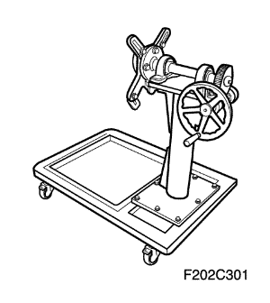

Epica | ||||||||
| ||||||||
| Aplicación | Descripción |
| Datos Generales: | |
| Tipo de motor | 6 Cilindros (en-línea) |
| Cilindrada | 1.993 cm³ (121,62 pulg.³) |
| Diámetro x carrera | 75 x 75.2 mm (2.95" x 2.96") |
| Relación de compresión | 10.2 : 1 |
| Orden de encendido | 1-5-3-6-2-4 |
| Diámetro interior del cilindro: | |
| Diámetro | 74.994~75.010 mm (2.9525~2.9531") |
| Ovalización (máxima) | 0.007 mm (0.00028") |
| Conicidad del cilindro (máxima) | 0.01 mm (0.0004") |
| Proyección del pistón | 0,132 mm máx. (0,0052 pulg. máx.) |
| Sobremedida (mida el pistón de reposición antes de rectificar el cilindro) | NINGUNO |
| Deformación de la cara del bloque | 0.1 mm (0.003937") |
| Pistón: | |
| Diámetro | 74.970~74.998 mm (2.9516~2.9527") |
| Holgura entre pistón y cilindro | 0.014~0.032 mm (0.00055~0.00126") |
| Segmentos del pistón: | |
| Segmento, distancia entre puntas, primer segmento de compresión | 0.2~0.4 mm (0.00787~0.01575") |
| Segmento, distancia entre puntas, segundo segmento de compresión | 0.2~0.4 mm (0.0787~0.01575") |
| Aceite | 0.2~0.7 mm (0.00787~0.02756") |
| Bulón del pistón: | |
| Diámetro | 18.995~19.000 mm (0.74783~0.74803") |
| Descentrado del bulón del pistón | 0,8 mm (0,0315 pulg.) Hacia el lado de empuje |
| Holgura: En pistón | 0.009~0.019 mm (0.00035~0.00075") |
| Holgura: En biela | Montaje con interferencia en biela (-0,010 ~ -0,025 mm) |
| Longitud | 55.7~56.0 mm (2.193~2.205") |
| Árbol de levas: | |
| Carrera de válvula: Admisión | 9.8 mm (0.3858") |
| Carrera de válvula: Escape | 9 mm (0.35") |
| Holgura entre la tapa del cojinete y el muñón del árbol de levas | 0.03~0.071 mm (0.00118~0.00280") |
| Diámetro exterior del muñón | 24.95~24.97 mm (0.98228~0.98307") |
| Cigüeñal: | |
| Muñón de bancada: Diámetro (todos) | 57.980~58.000 mm (2.2827~2.2835") |
| Muñón de bancada: Excentricidad radial (soporte de eje en los cojinetes nº 1 y nº 7, medida en el muñón nº 4) | 0.06 mm (0.00236") |
| Holgura de los cojinetes de bancada (todos) | 0.019~0.049 mm (0.00075~0.000193") |
| Juego axial | 0.055~0.265 mm (0.002~0.010") |
| sobremedida de reparación | NINGUNO |
| Muñequilla de biela: | |
| Diámetro (todos) | 47.2~47.212 mm (1.8583~1.8587") |
| Ovalización (máxima) | 0.008 mm (0.00031") |
| Juego de cojinete de biela | 0.080~0.260 mm (0.00315~0.01024") |
| Holgura de cojinete de biela | 0.031~0.065 mm (0.00122~0.00256") |
| Culata: | |
| Altura de la guía de válvula | 11.7~12.0 mm (0.46063~0.47244") |
| Altura total | 128.2~128.4 mm (5.04724~5.05512") |
| Altura total mínima después del mecanizado | 128.2 mm (5.0472") |
| Sistema de válvulas: | |
| Compensadores del juego de válvulas | Hidráulico |
| Excentricidad del asiento (máxima, todos) | 0.05 mm (0.00197") |
| Excentricidad de la cara de válvula (máxima, todas) | 0.03 mm (0.00118") |
| Diámetro del vástago de la válvula de admisión | 5.465~5.479 mm (0.21516~0.21571") |
| Diámetro del vástago de la válvula de escape | 5.465~5.470 mm (0.21480~0.21535") |
| Diámetro de válvula (admisión) | 29.3~29.5 mm (1.15354~1.16142") |
| Diámetro de válvula (escape) | 24.9~25.1 mm (0.98032~0.98819") |
| anchura de asiento de la válvula de admisión | 1.0~1.4 mm (0.03937~0.05512") |
| Anchura de asiento de la válvula de escape | 1.4~1.8 mm (0.05512~0.07087") |
| Ángulo de la cara de válvula | 90°25´~90°55´ |
| Ángulo de asiento de válvula | 89,5°~90° |
| Diámetro interior de la guía de válvula | 5.5~5.512 mm (0.21654~0.21701") |
| Bomba de aceite: | |
| Engranaje exterior al cuerpo | 0.1~0.19 mm (0.00394~0.00748") |
| Engranaje exterior a la media luna | 0.02~0.07 mm (0.00079~0.00276") |
| Engranaje interior a la media luna | 0.02~0.07 mm (0.00079~0.00276") |
| Juego axial (holgura de las puntas) | 0.02~0.16 mm (0.00079~0.00630") |
| Sellantes y adhesivos: | |
| Tornillos del cárter del aceite (cárter del aceite x placa de asiento) | Loctite® 5900 |
| Tapón del conducto de aceite | Loctite® 242 |
| Tapas y tapones de la camisa de refrigeración (tapones de los conductos de anticongelante) | Tapón con revestimiento de cierre seco |
| Aplicación | Descripción |
| Datos Generales: | |
| Tipo de motor | 6 Cilindros (en-línea) |
| Cilindrada | 2.492 cm³ (152 pulg.³) |
| Diámetro x carrera | 77 x 89.2 mm (3.03" x 3.51") |
| Relación de compresión | 9.8:1 |
| Orden de encendido | 1-5-3-6-2-4 |
| Diámetro interior del cilindro: | |
| Diámetro | 76.994~77.006 mm (3.0313~3.0317") |
| Ovalización (máxima) | 0.007 mm (0.00028") |
| Conicidad del cilindro (máxima) | 0.01 mm (0.0004") |
| Proyección del pistón | 0,132 mm máx. (0,0052 pulg. máx.) |
| Sobremedida (mida el pistón de reposición antes de rectificar el cilindro) | NINGUNO |
| Deformación de la cara del bloque | 0.1 mm (0.003937") |
| Pistón: | |
| Diámetro | 76.973~77.015 mm (3.0304~3.0320") |
| Holgura entre pistón y cilindro | -0.015~0.027 mm (-0.00059~0.00106") |
| Segmentos del pistón: | |
| Segmento, distancia entre puntas, primer segmento de compresión | 0.2~0.35 mm (0.00787~0.01378") |
| Segmento, distancia entre puntas, segundo segmento de compresión | 0.35~0.5 mm (0.01378~0.01969") |
| Aceite | 0.2~0.7 mm (0.00787~0.02756") |
| Bulón del pistón: | |
| Diámetro | 18.995~19.000 mm (0.74783~0.74803") |
| Descentrado del bulón del pistón | 0.6 mm (0.02362") |
| Holgura: En pistón | 0.009~0.019 mm (0.00035~0.00075") |
| Holgura: En biela | Montaje con interferencia en biela (-0,010 ~ -0,025 mm) |
| Longitud | 55.7~56.0 mm (2.193~2.205") |
| Árbol de levas: | |
| Carrera de apertura - admisión | 10 mm (0.39") |
| Carrera de apertura - escape | 9 mm (0.35") |
| Holgura entre la tapa del cojinete y el muñón del árbol de levas | 0.03~0.071 mm (0.00118~0.00280") |
| Diámetro exterior del muñón | 24.95~24.97 mm (0.98228~0.98307") |
| Cigüeñal: | |
| Muñón de bancada: Diámetro (todos) | 57.980~58.000 mm (2.2827~2.2835") |
| Muñón de bancada: Excentricidad radial (soporte de eje en los cojinetes nº 1 y nº 7, medida en el muñón nº 4) | 0.06 mm (0.00236") |
| Holgura de los cojinetes de bancada (todos) | 0.019~0.049 mm (0.00075~0.000193") |
| Juego axial | 0.055~0.265 mm (0.002~0.010") |
| sobremedida de reparación | NINGUNO |
| Muñequilla de biela: | |
| Diámetro (todos) | 47.2~47.212 mm (1.8583~1.8587") |
| Ovalización (máxima) | 0.008 mm (0.00031") |
| Juego de cojinete de biela | 0.080~0.260 mm (0.00315~0.01024") |
| Holgura de cojinete de biela | 0.031~0.065 mm (0.00122~0.00256") |
| Culata: | |
| Altura de la guía de válvula | 11.7~12.0 mm (0.46063~0.47244") |
| Altura total | 128.2~128.4 mm (5.04724~5.05512") |
| Altura total mínima después del mecanizado | 128.2 mm (5.0472") |
| Sistema de válvulas: | |
| Compensadores del juego de válvulas | Hidráulico |
| Excentricidad del asiento (máxima, todos) | 0.05 mm (0.00197") |
| Excentricidad de la cara de válvula (máxima, todas) | 0.03 mm (0.00118") |
| Diámetro del vástago de la válvula (admisión) | 5.465~5.479 mm (0.21516~0.21571") |
| Diámetro del vástago de la válvula (escape) | 5.465~5.470 mm (0.21480~0.21535") |
| Diámetro de la válvula de admisión | 30.1~30.3 mm (1.18504~1.19291") |
| Diámetro de la válvula de escape | 25.7~25.9 mm (1.01181~1.01969") |
| anchura de asiento de la válvula de admisión | 1.0~1.4 mm (0.03937~0.05512") |
| Anchura de asiento de la válvula de escape | 1.4~1.8 mm (0.05512~0.07087") |
| Ángulo de la cara de válvula | 90°~90°40´ |
| Ángulo de asiento de válvula | 89,5°~90° |
| Diámetro interior de la guía de válvula | 5.5~5.512 mm (0.21654~0.21701") |
| Bomba de aceite: | |
| Engranaje exterior al cuerpo | 0.1~0.19 mm (0.00394~0.00748") |
| Engranaje exterior a la media luna | 0.02~0.07 mm (0.00079~0.00276") |
| Engranaje interior a la media luna | 0.02~0.07 mm (0.00079~0.00276") |
| Juego axial (holgura de las puntas) | 0.02~0.16 mm (0.00079~0.00630") |
| Sellantes y adhesivos: | |
| Tornillos del cárter del aceite (cárter del aceite x placa de asiento) | Loctite® 5900 |
| Tapón del conducto de aceite | Loctite® 242 |
| Tapas y tapones de la camisa de refrigeración (tapones de los conductos de anticongelante) | Tapón con revestimiento de cierre seco |
| Aplicación | N•m | Árbol de transmisión izquierdo | Articulación |
| Tuerca/tornillo de fijación del colector de admisión | 10~14 | - | 89~124 |
| Tornillo de la tapa embellecedora del motor | 8~12 | - | 71~106 |
| Tornillo del soporte de apoyo delantero | 15~25 | 11~18 | - |
| Tornillo del soporte de apoyo trasero (cara de admisión) | 8~12 | - | 71~106 |
| Tornillo del soporte de apoyo trasero (cara de escape) | 18~25 | 13~18 | - |
| Tornillo de la tapa de la culata | 12~14 | - | 106~124 |
| Tornillo de la carcasa del filtro de aire | 8~12 | - | 71~106 |
| Tornillo de fijación del adaptador del filtro del aceite | 20~26 | 15~19 | - |
| Pieza de unión | 17~23 | 13~17 | - |
| Filtro del aceite | 12~16 | 9~12 | - |
| Tuerca de fijación del piñón de la bomba de aceite | 18~22 | 13~16 | - |
| Tornillo de la bomba de aceite | 18~22 | 13~16 | - |
| Tornillo de fijación del tubo de aspiración del aceite -a- la bomba de aceite | 8~12 | - | 71~106 |
| Tornillo del soporte del tubo de aspiración de aceite | 8~12 | - | 71~106 |
| Tornillo de la tapa del piñón de la bomba de aceite | 5~7 | - | 44~62 |
| Tornillo de retención del cárter del aceite | 8~12 | - | 71~106 |
| Tornillo de sujeción de las bridas del cárter del aceite -a- la caja de cambios | 27~35 | 20~26 | - |
| tapón de vaciado del cárter del aceite, tapón de drenaje del cárter del aceite | 30~40 | 22~30 | - |
| Tuerca del soporte de fijación del motor -al- soporte antivibratorio | 55~70 | 41~52 | - |
| Tuerca del soporte de fijación del motor | 42~60 | 31~44 | - |
| Tornillo del soporte de fijación del motor | 42~60 | 31~44 | - |
| Tornillo de la fijación de la caja de cambios -al- larguero longitudinal | 55~75 | 41~55 | - |
| Tornillo de la fijación de la caja de cambios -al- soporte de fijación de la caja de cambios | 55~75 | 41~55 | - |
| Tuerca de la fijación de la caja de cambios -al- soporte de fijación de la caja de cambios | 55~75 | 41~55 | - |
| Tornillo pasante de la fijación de la caja de cambios | 100~120 | 74~89 | - |
| Tuerca de fijación del colector de escape | 27~30 | 20~22 | - |
| Tornillo del escudo térmico del colector de escape | 18~22 | 13~16 | - |
| Tornillo del bloque motor -a- la caja de cambios | 60~85 | 44~63 | - |
| Tornillo de la barra central de la suspensión delantera | 80~100 | 59~74 | - |
| Tornillo del convertidor de par de la caja de cambios | 40~50 | 30~37 | - |
| Tornillo del soporte de fijación del motor -al- buje del amortiguador delanteros | 70~90 | 52~66 | - |
| Tornillo de fijación de la cubierta inferior del motor | 17~27 | 13~20 | - |
| Tornillo de la guía fija de la cadena de distribución | 18~22 | 13~16 | - |
| Tornillo de la palanca de la cadena de distribución | 18~22 | 13~16 | - |
| Tornillo del tensor de la cadena de distribución | 18~22 | 13~16 | - |
| Tornillo de la guía de la cadena superior | 9~11 | - | 80~97 |
| Tornillo de la tapa de la cadena de distribución | 6~10 | - | 53~89 |
| Tornillo de la tapa de la cadena de distribución (central) | 18~22 | 13~16 | - |
| Tensor automático de la correa de accionamiento | 20~30 | 15~22 | - |
| Tornillo de la polea de la bomba de agua | 8~12 | - | 71~106 |
| Tornillo del soporte de fijación del motor | 25~31 | 18~23 | - |
| Tornillo de la polea del cigüeñal | 500~600 | 369~443 | - |
| Tornillo de la placa de acoplamiento flexible | 70~80 | 52~59 | - |
| Tornillo de la culata | 20, 25+70° +70° | 15,18+70° +70° | - |
| Tornillo del soporte de la almohadilla superior | 35~55 | 26~41 | - |
| Tornillo de fijación de la lumbrera de salida de refrigerante | 8~12 | - | 71~106 |
| Tornillo de fijación del adaptador de EGR | 18~22 | 13~16 | - |
| Tornillo de retención de la bomba de la dirección asistida | 20~30 | 15~22 | - |
| Tornillo del soporte del colector de admisión | 20~30 | 15~22 | - |
| Tornillo interior de la placa de asiento | 33+135° | 24+135° | - |
| Tornillo exterior de la placa de asiento | 20~26 | 15~19 | - |
| Tornillo de la palanca de la cadena de la bomba de aceite | 6~10 | - | 53~89 |
| Tornillo del soporte de la varilla de nivel de aceite del motor | 18~22 | 13~16 | - |
| Tornillo de la varilla de nivel de aceite del motor | 8~10 | - | 71~89 |
| Tornillo del deflector de la placa de asiento | 7~9 | - | 62~80 |
| Tornillo del soporte de la almohadilla inferior | 35~45 | 26~33 | - |
| Tornillo de fijación de la polea loca | 35~55 | 26~41 | - |
| Tornillo de fijación de la almohadilla superior -a- la almohadilla inferior | 30~40 | 22~30 | - |
| Tuerca/tornillo de fijación del compresor | 20~30 | 15~22 | - |
| Tapón del eje del balancín | 35~45 | 26~33 | - |
| Tornillo de las tapas de los cojinetes del árbol de levas | 10~14 | - | 89~124 |
| Tornillo del distribuidor de levas | 18~22 | 13~16 | - |
| Tornillo de la tapa de la biela | 20+45°+90° | 15+45°+90° | - |
| Tornillo del soporte del buje del amortiguador delantero | 55~75 | 26~55 | - |
| Tornillo del soporte de fijación trasero de la caja de cambios | 55~75 | 26~55 | - |
| Tornillo de la rueda objetivo | 7~11 | - | 62~97 |
| Tornillo del adaptador del radiador | 18~22 | 13~16 | - |
| Tornillo de la masa del bloque motor | 15~25 | 11~18 | - |
| Tornillo de la válvula PCV | 8~12 | - | 71~106 |
| Bujía | 20~30 | 15~22 | - |
| Tornillo del soporte del cableado | 8~12 | - | 71~106 |
| Sensor de IAT (temperatura del aire de admisión) | 20~30 | 15~22 | - |
| Tornillo del sensor MAP (sensor de presión absoluta del colector) | 6~10 | - | 53~89 |
| ECTS (Sensor de temperatura del refrigerante del motor) | 15~20 | 11~15 | - |
| Sensor de CMP (posición del árbol de levas) | 10~14 | - | 89~124 |
| O2S (Sensor de oxígeno) | 34~44 | 25~32 | - |
| Tornillo del sensor de CKP (posición del cigüeñal) | 5~8 | - | 44~71 |
| Sensor de golpes | 18~20 | 13~15 | - |
| Tornillo del cuerpo del acelerador | 8~18 | 6~13 | - |
| Tornillo de la bobina de encendido | 6~8 | - | 53~71 |
| Tornillo de EGR | 20~30 | 15~22 | - |
| Tornillo de la bomba de agua | 20~26 | 15~19 | - |
| Tornillo de la caja del termostato | 8~12 | - | 71~106 |
| Tornillo del conjunto del ventilador del sistema de refrigeración | 3,5~4,5 | - | 31~40 |
| Tornillo del soporte del radiador | 8~10 | - | 71~89 |
| Tornillo del depósito de refrigerante | 3,5~4,5 | - | 31~40 |
| Tuerca del tubo de escape delantero | 32~48 | 24~35 | - |
| Tornillo del soporte inferior del tubo de escape delantero | 32~48 | 24~35 | - |
| Tuerca del tubo de escape delantero al silenciador delantero | 25~35 | 18~26 | - |
| Tuerca que une el silenciador delantero -al- silenciador trasero | 32~48 | 24~35 | - |
| Tuerca del escudo térmico del convertidor catalítico | 2~3 | - | 18~27 |
| Tuerca de la pantalla térmica del silenciador delantero | 2~3 | - | 18~27 |
| Tuerca de la pantalla térmica del silenciador trasero | 2~3 | - | 18~27 |
| Tornillo superior del alternador | 30~40 | 22~30 | - |
| Tornillo inferior del alternador | 30~45 | 22~33 | - |
| Tornillo del soporte del motor de arranque al bloque motor | 40~50 | 30~37 | - |
| Tornillo del soporte del motor de arranque -a- la caja de cambios | 45~55 | 33~41 | - |
| Tuerca de la abrazadera de la varilla de la batería | 4 | - | 35 |
| Tuercas de fijación del protector del depósito de combustible | 2~3 | - | 18~27 |
| Tornillos de fijación del tubo de evaporación de la caja de emisión de vapores | 7~12 | - | 62~106 |
|   | DW110-030 soporte de reparación del motor |
 | DW110-060 soporte de elevación del (conjunto) motor |
 | DW110-130-01 Mango de la polea del cigüeñal |
 | DW110-130-02 Herramienta de instalación/desmontaje de la polea del cigüeñal |
 | DW110-140 Pasador guía de instalación de la tapa de la cadena de distribución |
 | DW110-150 Mango del piñón del árbol de levas |
 | DW110-160 Herramienta de instalación/desmontaje del eje del balancín |
 | DW110-170-01 Compresor del aro del pistón (XK 2.0) |
 | DW110-170-02 Compresor del aro del pistón (XK 2.5) |
 | DW110-180-01 Instalador del retén de aceite delantero del cigüeñal |
 | DW110-180-02 Instalador del retén de aceite trasero del cigüeñal |
 | DW110-190 Dispositivo de ajuste del cigüeñal |
 | DW010-010 Soporte para cadena cinemática |
 | 09916-14510 compresor de muelles de válvula 09916-48210 Adaptador del compresor de muelles de válvula |


| © Copyright Chevrolet Europe. Reservados todos los derechos |